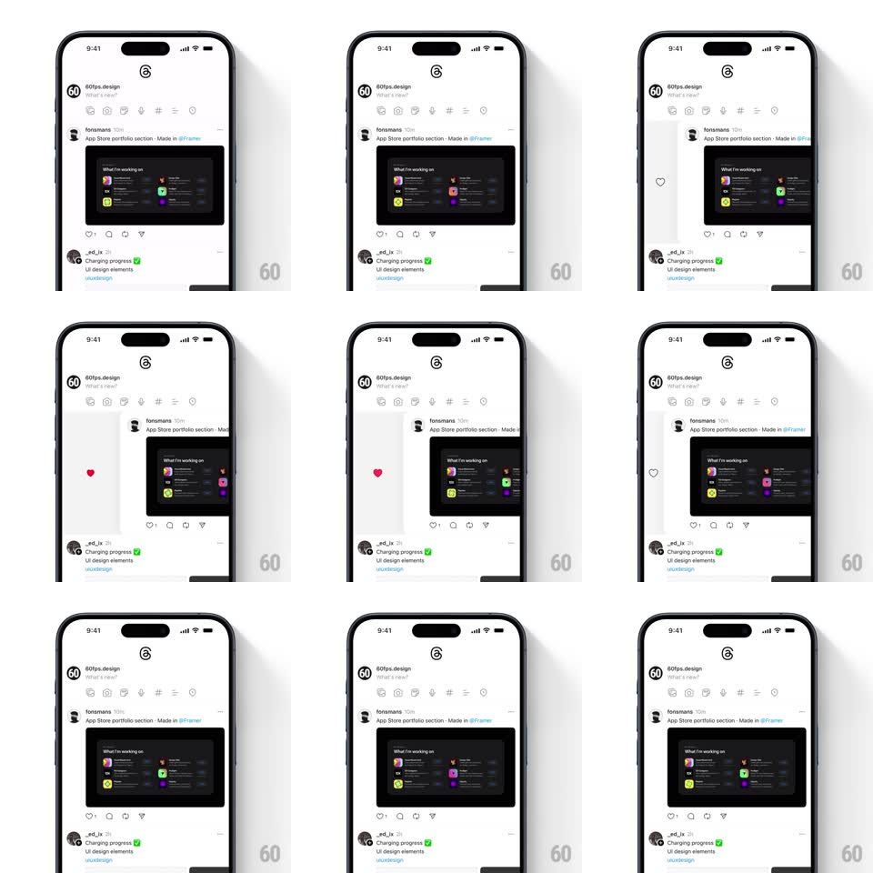

Media
Frame-by-frame

Rebuild this interaction 1:1: Threads' swipe-to-like - dragging a post card sideways reveals a heart that scales up as you pull; release past the threshold and the card snaps back with the like confirmed.

Rebuild this interaction 1:1: Threads' swipe-to-like - dragging a post card sideways reveals a heart that scales up as you pull; release past the threshold and the card snaps back with the like confirmed. ## Integration Integration: stack-agnostic spec - springs given as stiffness/damping, timed motions as duration + curve; map every value to your framework and animation library of choice. ## Scene The light Threads feed (60fps.design "What's new?" composer row; a post by forsmsns, "App Store portfolio section - Made in @Framer", with a dark screenshot). Swiping the post card right exposes a heart glyph revealed in the gap at the leading edge. ## Motion spec Pattern: swipe-reveal confirm gesture. - Drag right: the whole card tracks the finger 1:1; in the revealed gutter a heart scales with drag progress (0.3 -> 1.0 at the commit threshold, ~80pt) and greys-to-red as it arms. - Cross the threshold: the heart does a readiness pop (extra scale pulse 1 -> 1.2 -> 1, 150ms) mid-drag. - Release past threshold: the card springs home (spring ~420/22, 280ms), the heart flashes and flies into the action row's heart slot (arc path, 250ms), and the row heart fills red with a small count tick. - Release early: the card springs home and the revealed heart shrinks away (scale + fade, 180ms) - nothing happens. ## Calibration - The heart's growth is tied to drag distance, not time - the user feels the threshold through the animation. - The card stays under the finger; no decoupled easing while dragging. ## Reduced motion No flight arc - the row heart fills after the card settles. ## Don't miss - Vertical scroll still wins: the gesture only claims the touch after clear horizontal intent (~10deg cone). - The revealed heart sits in the left gutter the swipe creates - it's uncovered, not overlaid.